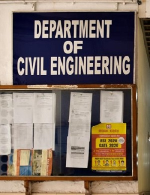
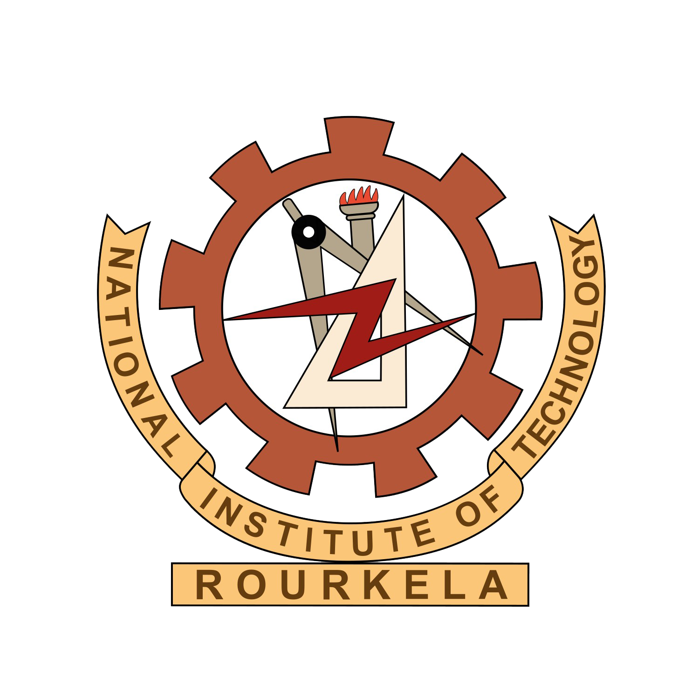

About Us
"Taking Pride, Getting Fascinated"
CEST
Founded in 2012, the "Civil Engineering Students’ Technical Club" (CEST) started in NIT Rourkela. The club aims to provide a platform for the students to think, reflect and wonder about the phenomena involved in civil engineering. This Club desires to reinforce the knowledge and excitement that the students attained in their classes through interesting activities. The club also contributes its ideas to the students and organizes many events in the institute, which includes both live and online events.
Unlike other clubs, this club produces a whole separate constitution for its club members where they strictly abide by it. The Constitution aims at establishing standard procedures and code of conduct to be followed in the Club, emphasizing the major values that the club embodies and to establish continuity in the functioning of Club from year to year. The Constitution shall be guiding spirit for the Club and its members in its functioning.
Institution of Civil Engineer (ICE)'s NIT Rourkela chapter aspires to foster and promote the art and science of Civil Engineering and collaborated with CEST in 2017. The Institution of Civil Engineers (ICE) is an independent professional association for civil engineers and a charitable body which exists to deliver benefits to the public.
CEST has been proving its excellence by achieving glorious milestones over the previous year starting from Bridge breaker to Crane-O-Mania which boosted the mechanics and structural engineering skills, Abode Optimization where ideas are pulled up and presented, and Around the campus in 60 minutes exploring the giant NITR campus. CEST has successfully organised AutoCAD, STAADPro, Primavera, MIDAS, and 3DS Max workshops providing with immense knowledge of the software for the participants. 2020 being a pandemic year CEST produced some of the best initiatives like CIVIPEDIA being an encyclopaedia for civil field and expanded its wings with CIVI-NAR organising some knowledgeable webinars by reputed professors across the globe. The members of CEST have also secured some glorious positions in tech fest conducted in IITKGP. Apart from these, they had also conducted research projects on prominent topics of structural engineering namely plastic fibre reinforced concrete, glass fibre reinforced concrete and thirsty concrete.
CEST has brought some great reputation for NITR and journey of the club continues to prove its excellence.
Our Motto
 "To nurture and sustain the enthusism of civil engineering among the student community and make them industry ready in the process."
"To nurture and sustain the enthusism of civil engineering among the student community and make them industry ready in the process."
SAC
 Student activity center of NITR is the central hub for various activities performed by students that promote talent and interest. It works on the skill development of students that are useful for the public and institution. SAC activities are organized under four societies consisting of many clubs, each focusing on different aspects. The Technical Society (TS) promotes and encourages the students in developing and spreading knowledge about the technical aspects. The cordial relationship between technical clubs of different institutes leads to collaboration of many events. The Sports and Games Society encourages student fraternity to participate in various sports and games. The Literary and Cultural Society (LC) promotes extracurricular activities such as creative writing, art, photography etc. The Film and Music Society creates a multicultural environment by consciously promoting music, dance and drama.
Student activity center of NITR is the central hub for various activities performed by students that promote talent and interest. It works on the skill development of students that are useful for the public and institution. SAC activities are organized under four societies consisting of many clubs, each focusing on different aspects. The Technical Society (TS) promotes and encourages the students in developing and spreading knowledge about the technical aspects. The cordial relationship between technical clubs of different institutes leads to collaboration of many events. The Sports and Games Society encourages student fraternity to participate in various sports and games. The Literary and Cultural Society (LC) promotes extracurricular activities such as creative writing, art, photography etc. The Film and Music Society creates a multicultural environment by consciously promoting music, dance and drama.
Civil Engineering Department
Civil engineering is one of the oldest branch of NITR, offering courses in B.Tech. and PG in specializations like Geotechnical, Structural, Water Resources, Transportation and Environmental engineering. When the oldest religion of earth was yet to spread its roots, an idea was vibrant among our ancestors to get shelter, which made them rack their grey matter and find something that has surprised us as descendants. We are talking about civil engineering here, which dates back to 4000 B.C. to 2000 B.C. Being the oldest of all engineering branches after Military Engineering, it still amazes Homo-sapiens to explore and discover its vast arena. Ranging from Archimedean screw to international space station, from a thatched hut to a king's mansion, civil engineering finds its use in almost all layers of human life. The monument which made death even spectacular- Pyramids. The architecture which gave love a perennial meaning- The Taj Mahal. From the buildings of Mehrgarh to the stout tower of Burj Khalifa, the list in its own is huge and marvellous and new marvels are added to the list by dint of the hard-work and artistic minds of civil engineers. We hope that this trend continues and that Civil Engineering shall never stop inspiring the budding civil engineers, thinkers around the world.
NIT Rourkela
National Institute of Technology, Rourkela is a publicly funded premier institute of higher learning for engineering and science located in the steel city Rourkela, Odisha. It is recognized as an Institute of national importance by the NIT act, 2007. It was established as REC, Rourkela on 15th august 1961 by CM of Odisha, Biju Patnaik and its foundation stone was laid by Prime Minister Shri. Jawaharlal Nehru. The institute offers B.Tech, B.Arc, integrated M.Tech, integrated M.Sc., MBA and PHD courses. It is ranked among 1000 in Times (World-2020),190 in Times (Asia-2020), 32 in NIRF(Overall-2020) and 16 in NIRF (engineering-2020). Its vision is to become an internationally acclaimed institution that will serve as source of knowledge and expertise for the society.
Our Faculty Advisor
Dr Subhajit Mondal
Assistant Professor
Civil Engineering Dept.
NIT Rourkela